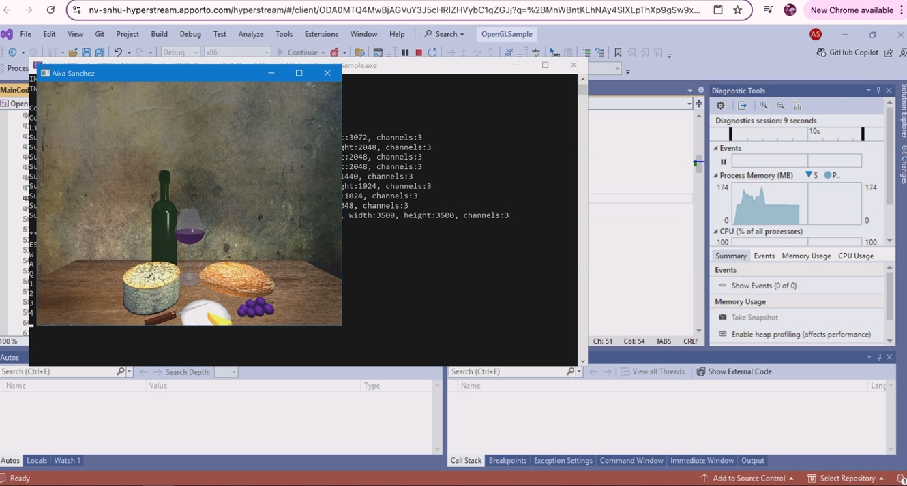
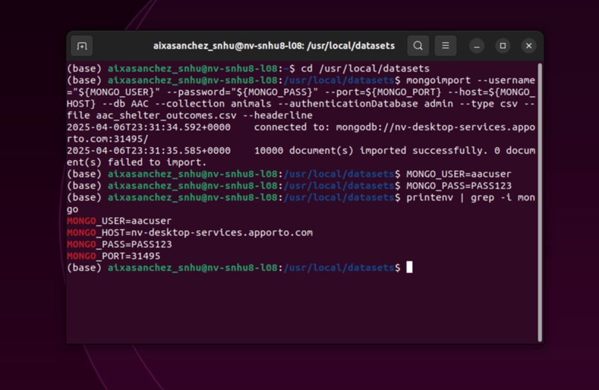
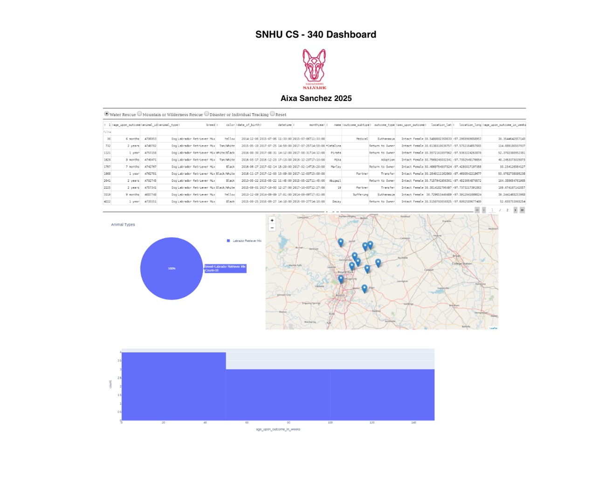

CS-499 | SNHU
The selected artifacts originate from CS-330 Computer Graphics and Visualization and CS-340 Client/Server Development. During the capstone, I reviewed and enhanced these artifacts by improving code structure, resolving defects, and strengthening integration between application components. This process demonstrates growth in software engineering practices, algorithmic thinking, and database integration.
▶ Watch Code Review VideoThis artifact is a C++ graphics application enhanced during CS 499, where I designed and modeled a coffee table to create a cozy atmosphere using warm tones, soft lighting, and realistic textures to add depth and visual appeal. I improved the project by resolving library dependencies, debugging runtime and memory errors, and restructuring the code to enhance modularity and maintainability. I also refactored components to better separate rendering logic from core functionality and optimized routines for improved performance and stability, demonstrating my ability to strengthen both the visual design and technical structure of the application.

View on GitHubThis artifact includes a C++ graphics application and a Python animal shelter management system. Enhancements focused on improving search logic by refining filtering and query efficiency, as well as optimizing data handling through structured MongoDB integration. I strengthened backend functionality by improving how records were retrieved, processed, and displayed, ensuring smoother performance and more reliable data interactions between the application and the database.

View on GitHubThis project utilized the Austin Animal Center Outcomes dataset stored in MongoDB, implementing secure CRUD operations through Python object-oriented programming principles. The system was developed and tested in Jupyter Notebook, where I validated database connections, ensured proper data insertion and retrieval, and applied structured methods for updating and deleting records. Emphasis was placed on secure configuration, organized class design, and accurate data handling to maintain integrity and reliability.

View on GitHubThroughout my Computer Science program, I developed a strong technical foundation across software engineering, algorithms, databases, and system design while also strengthening professional skills such as collaboration, communication, and problem solving. Completing coursework and developing this ePortfolio allowed me to reflect on my growth, identify my strengths, and refine my professional goals as I prepare to enter the computer science and data analytics field.
One of the most impactful aspects of my academic experience was learning to collaborate in team environments. Courses such as Software Engineering and Client/Server Development required working with peers to design application components, troubleshoot integration issues, and share responsibilities across development tasks. These experiences strengthened my ability to communicate technical concepts clearly, manage shared codebases, and adapt to feedback while maintaining project progress.
Communication with stakeholders was another key skill developed throughout the program. In multiple courses, including database and software design classes, I translated technical requirements into functional solutions while documenting system behavior and presenting results through reports and visualizations. This experience helped me understand how to align technical implementation with user and business needs, an essential skill for professional environments.
Software engineering coursework played a key role in shaping my development practices, providing experience with modular design, debugging, dependency management, and code refactoring using C++, Python, and Java. During my capstone, I strengthened these skills by revisiting prior artifacts to improve maintainability, resolve defects, and enhance overall system structure. Database coursework expanded my abilities through hands-on work with MongoDB and relational database concepts, including configuration, CRUD operations, data modeling, and backend integration. Security principles were integrated throughout the program, reinforcing the importance of secure configuration, authentication, and responsible data handling. Developing this ePortfolio allowed me to connect these experiences into a cohesive reflection of my growth, demonstrating my technical versatility, analytical thinking, and readiness to contribute to data analytics and software development roles in the professional field.